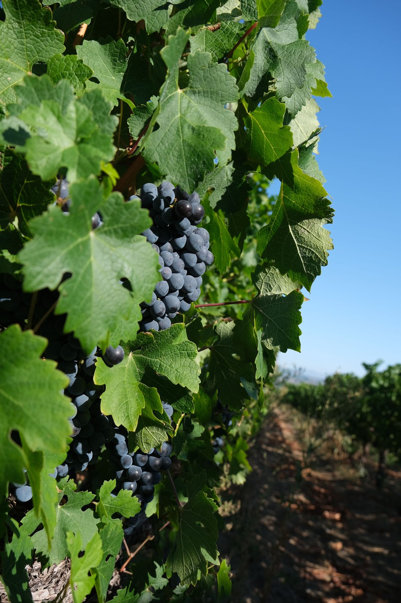

Etna — Wine shaped by fireEtna — Vino plasmato dal fuoco
How volcanic soil, altitude and old vines give Etna its unmistakable, mineral character. Come suolo vulcanico, altitudine e viti antiche danno all'Etna il suo carattere minerale inconfondibile.
Read on Sicily →Leggi su Sicilia →